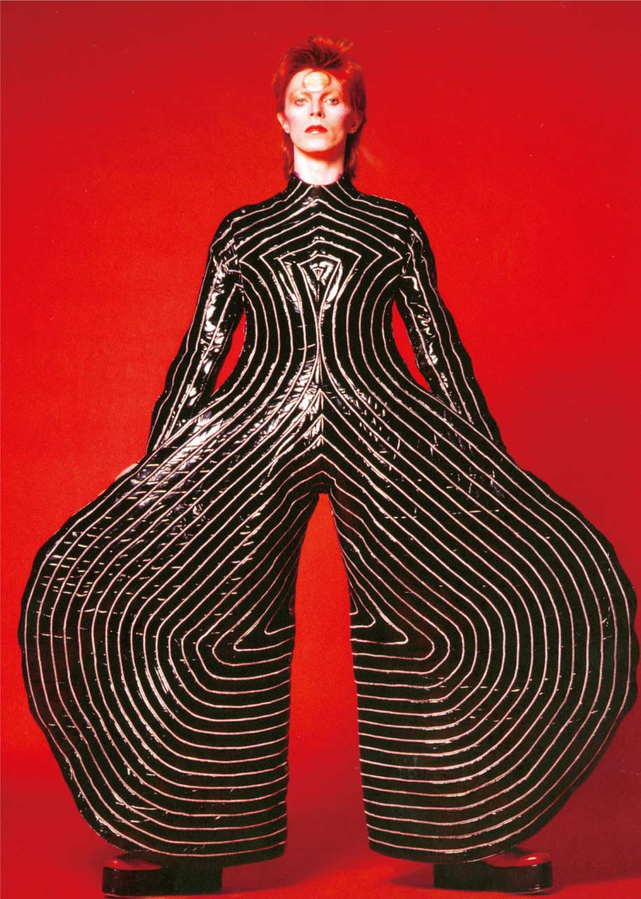

Tickets チケット

Special スペシャル

Exhibition
ボウイ展について
直筆のスケッチやメモ、衣装、写真、映像など、デヴィッド・ボウイ・アーカイヴか
ら厳選された300点以上の貴重な品々を展示。ヘッドホンで楽曲を味わいながら、ボ
ウイの魅力と50年におよぶクリエイティビティを体感できる画期的な展覧会。


Column
コラム


By 新谷洋子
TVC15〜デヴィッド・ボウイとテレビの関係――テレビの画面越しに聴こえる彼の歌声を辿って。
デヴィッド・ボウイのテレビ初出演が1964年だったことを筆者に教えてくれたのは、ほかでもなくボウイ展...

By Staff
グラフィック・デザイナー、ジョナサン・バーンブルックが語る、デヴィッド・ボウイ、そして『DAVID BOWIE is』
デヴィッド・ボウイの21世紀に入ってからのアルバム『ヒーザン』、『リアリティ』、『ザ・ネクスト・デイ...

About
David Bowie
時代と共に変化し続ける孤高の存在にして、英国を代表するロック界最重要アーティストの一人。 ミュージシャンの枠を超えた類まれな表現者として今なお音楽のみならず、全世界的にアート、ファッション、文化そして社会に影響を与え、人々をインスパイアし続けるデヴィッド・ボウイ。
詳しく見る
Access
アクセス
| 会場 | 寺田倉庫G1ビル |
| 所在地 | 東京都品川区東品川二丁目6番10 GoogleMap |
| 各種アクセス | 電車をご利用の場合】 東京モノレール『天王洲アイル駅』から徒歩約5分 東京臨海高速鉄道 りんかい線『天王洲アイル駅』から徒歩約4分 【バスをご利用の場合】 JR 品川駅港南口 都バス1 番のりばより「品98大田市場行」 バスに乗車し約10分「新東海橋」下車徒歩1分 【天王洲アイル駅までの所要時間】 東京モノレールで羽田空港より14分、浜松町駅から4分 JR新宿駅より直通で最短20分 JR渋谷駅より直通で最短14分 |

| [主催] | DAVID BOWIE is 日本展実行委員会 |
| [企画] | ヴィクトリア・アンド・アルバート博物館 |
| [特別協賛] | 株式会社ソニー・ミュージックエンタテインメント |
| [協賛] | ジャガー・ランドローバー・ジャパン株式会社 / 寺田倉庫 |
| [後援] | 駐日英国大使館 / ブリティッシュ・カウンシル / 品川区 / TOKYO MX / テレビ神奈川 / WOWOW / J-WAVE / TOKYO FM / InterFM897 / 文化放送 |
| [音響協力] | ゼンハイザー / 株式会社アートアンドパート / OPHRYS Systèmes |
| [協力] | 日本貨物航空株式会社 / 日本航空株式会社 / ムービープラス / 東京臨海高速鉄道株式会社 / 東京モノレール株式会社 / 天王洲総合開発協議会 |